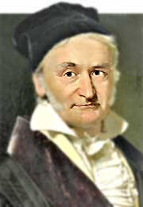

Introducción
El método de Gauss-Seidel es un algoritmo iterativo utilizado para resolver sistemas de ecuaciones lineales. Es especialmente útil para resolver sistemas de ecuaciones con matrices diagonales dominantes.

Algoritmo
El algoritmo de Gauss-Seidel se basa en la iteración de las ecuaciones del sistema en un orden determinado. Aquí tienes un ejemplo de pseudocódigo para el método:
Inicializar el vector solución x^(0)
Para k = 1 hasta n_max_iteraciones
Para i = 1 hasta n
Calcular x_i^(k) usando x_j^(k-1) para j ≠ i
Fin Para
Fin Para
Implementación
Puedes implementar el método de Gauss-Seidel en tu lenguaje de programación preferido, como Python o MATLAB, para resolver sistemas de ecuaciones específicos.
Ejemplo
Aquí hay un ejemplo de un sistema de ecuaciones que se resuelve utilizando el método de Gauss-Seidel:
4x + y - z = 7
2x + 7y + z = -5
-3x + 2y + 9z = 10
Mediante la implementación del método de Gauss-Seidel, puedes encontrar una aproximación de la solución.